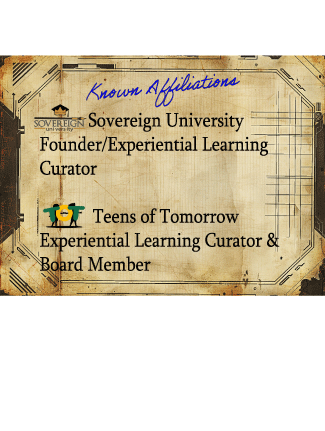
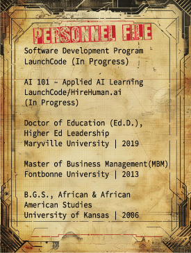

The Hero's Journey
Embark on an epic tale envisioning how a proven systems thinking designer and
educator successfully transitions into the world of software development.

Who I Am
I am Dr. Shawn HERO Harrell; a designer, educator, and engineer from St. Louis MO.
Though new to the world of software development, I've been an educator for over 2 decades,
and have been designing my entire life. I enjoy designing systems and bringing ideas to life.
Follow along to learn more about my journey and what I will build next.


How I See
For most of my life I have found ways to express myself artistically through drawing, painting, collaging,
and graphic and fashion design; oftentimes combining these skills. This manifests through my professional
life as collage artist, fashion designer and custom apparel provider. I take pride in bringing clients ideas
to life and approach fashion design as storytelling through apparel. I have worked with hundreds of clients
and organizations over the years, most notably artist Dail Chambers, Chick-fil-A Sunset Hills, MO, St. Louis
Community College, and Harris Stowe State University.
How I Teach
Welcome to my classroom! Click around the room to learn more about my work as an educator and curriculum desginer.
In collaboration St. LouisCITY SC and Atlas Public School, I developed a curriculum for a health and fitness camp that ran from Monday, June 26, 2023 - Friday, June 30, 2023 from the hours of 9am - 3 pm at The LegacyCenter, 6850 Normandale Drive St. Louis, MO 63121. This education experience was designed to provide youth athletes with physical and mental wellness training to encourage success on and off the field. During the week,athletes participated in activities to support their physical fitness, soccer technique, mindfulness, nutrition, and wellness.
In collaboration with another educator I designed a 9-month cohort-based curriculum system with structured modules, session plans, and facilitation guides. We also developed frameworks integrating storytelling, historical analysis, and place-based learning. To ensure success we evaluated and refined curriculum components to improve clarity, usability, and participant engagement. It was also necessary to collaborate with stakeholders to align curriculum outputs with program goals and delivery models. For sustainability we built adaptable curriculum structures designed to evolve based on participant feedback and needs.
I co-developed a Montessori-aligned urban agriculture and entrepreneurial curriculum that linked business principles to sustainable farming for youth K-9 learners. I also supported field implementation and teacher training.
Legacy Institute (2021-2023) - I developed curriculum for and taught the course, "A History of Black Resistance". The purpose of the course was to present Melanated (Black) history from the perspective of successes opposed to failures, and victories opposed to trauma. Based on participant surveys learners completed the course with a better understanding of the role resistance has played in the global history of Melanated people. Learners were challenged with level-specific reading and research assignments, participated in reenactments, and completed summaries and to demonstrate competancy. To be most inclusive, readings relied heavily on open-source materials, and learners were encouraged and challenged to critically think about how the history under exploration affects their current reality and place in world history.